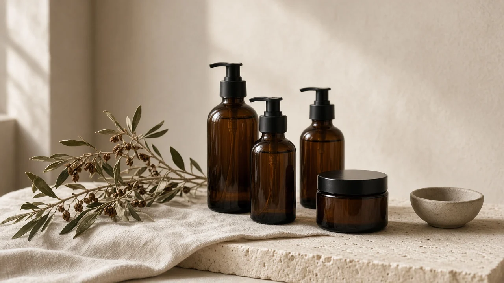
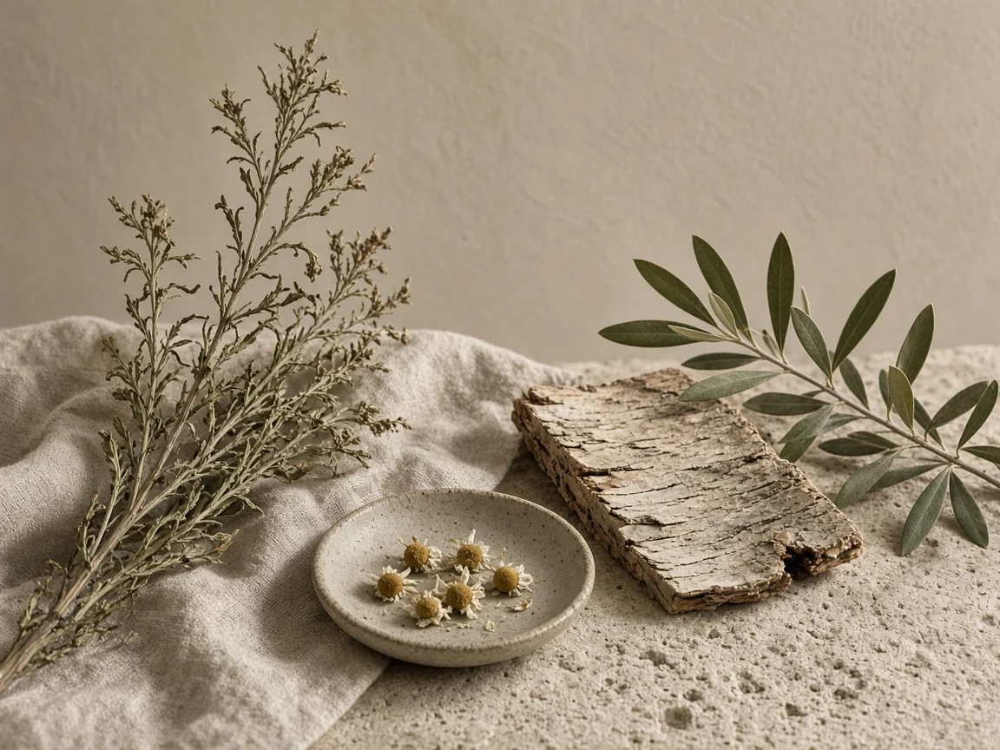
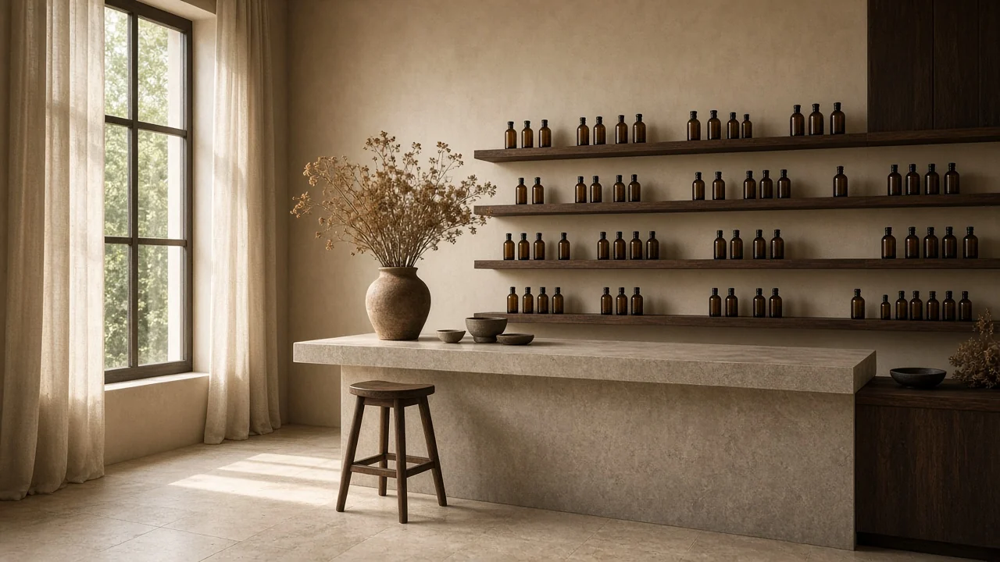

Skin · Body · Fragrance
피부에 머물다
향으로 남는 것
미르테는 스킨케어와 향을 하나의 의식으로 바라봅니다. 과장 없는 제형, 정직한 향, 손에 쥐면 알 수 있는 무게. 서두르지 않고 만든 일상의 병입니다.


Our thinking
식물의 온기를
천천히 빚다
미르테는 원료 하나를 고를 때에도, 병을 만질 때의 무게를 생각할 때에도 서두르지 않습니다. 빛과 공기를 가리는 앰버 유리, 읽기 쉬운 이름, 필요한 만큼만 담은 제형.
우리는 피부를 고친다고 말하지 않습니다. 이미 가지고 있는 리듬을 해치지 않는 쪽을 택할 뿐입니다. 향은 공간을 점유하지 않고, 옷깃에 잠시 머물다 사라지게 합니다.
제형 살펴보기
A place
북촌의 작은 방
창으로 들어오는 오후의 빛, 돌 카운터, 말린 가지 한 줄기. 미르테 북촌은 제품을 진열하기보다, 만져 보고 맡아 볼 수 있는 조용한 방을 지향합니다.
예약 없이 들를 수 있습니다. 시연용 주소이므로 실제 매장은 없습니다.